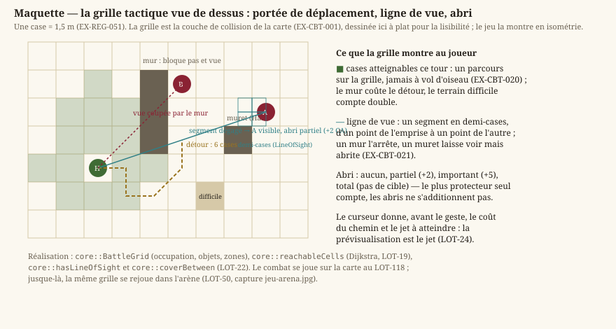
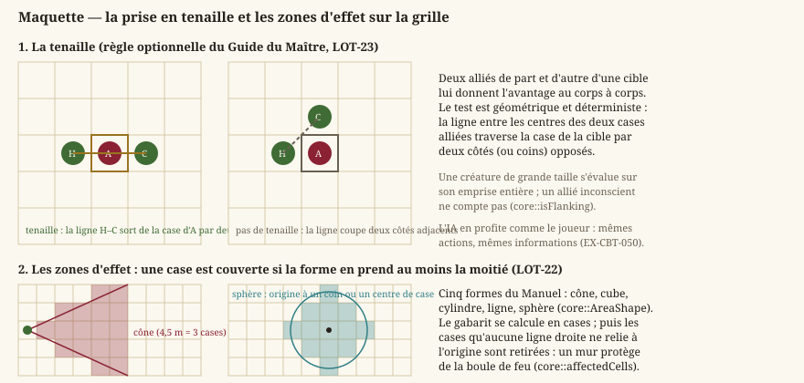

Combat tactique
Statut : livré dans l'arène, à porter sur la carte. La mécanique entière — bascule, initiative, économie d'actions, déplacement, ligne de vue, abri, zones, attaque, IA — est écrite et testée (
LOT-18→LOT-24), et se joue aujourd'hui dans le Colisée (LOT-50). Ce qui reste tient en trois lots : la rencontre déclenchée sur la carte d'exploration (LOT-118), les écrans de fin (LOT-119), l'agonie et la mort (LOT-137). Dépend deregles-d20.md(le jet, les conditions) et deexploration.md(la couche de collision, l'orientation).
Ce document concrétise EX-VIS-004 — « résoudre un combat tactique complet au tour par tour » — dont il détaille chaque terme : l'initiative, la portée, le jet d'attaque et la fin de rencontre.
Le combat est la moitié « au tour par tour » du jeu. Il se déroule sur la carte d'exploration, sur une grille dérivée de la couche de collision — décision de cadrage actée avant le LOT-01 : pas d'écran de combat séparé, pas de transition vers une arène abstraite. Ce qui change à la bascule, c'est le temps, pas le lieu.
1. Bascule
- EX-CBT-001 — Le passage exploration ↔ combat est explicite et réversible : la partie entre en combat sur un déclencheur nommé, en sort quand plus aucun camp hostile n'est engagé, et le personnage reste au même endroit de la même carte. La grille tactique est dérivée de la couche de collision (
EX-LVL-016), jamais dessinée séparément : deux sources de vérité pour « peut-on se tenir ici » donneraient un combat où l'on traverse ce qu'on ne pouvait pas traverser une seconde plus tôt.
2. Le tour
- EX-CBT-010 — L'ordre de jeu est déterminé par un jet d'initiative en début de combat, et reste stable jusqu'à la fin : un ordre recalculé à chaque tour rendrait toute planification impossible. Les égalités sont départagées par une règle déterministe, non par l'ordre d'insertion en mémoire — sans quoi deux parties identiques divergeraient.
- EX-CBT-011 — Un tour offre une action, une action bonus, une réaction et un déplacement, chacun consommable une seule fois. La réaction se reconstitue au début du tour suivant de son porteur, et non à la fin du tour courant : c'est ce qui permet à une réaction d'être dépensée hors de son propre tour, ce que la moitié des capacités défensives supposent.
- EX-CBT-012 — La fin d'un tour est explicite. Un tour qui se termine tout seul quand les ressources sont épuisées prive le joueur de la possibilité de ne rien faire, qui est une décision tactique légitime — et rend le jeu imprévisible dès qu'une capacité rend une action.
3. L'espace
Trois exigences se partagent une seule question : où peut-on aller, et qui peut-on atteindre ? Elles se lisent mieux ensemble, sur la grille qu'elles décrivent — une case de 1,5 m, dérivée de la couche de collision, et jamais une seconde carte posée à côté de la première.
{kind=link}

Ce que la maquette montre et qu'une phrase peine à dire : le joueur voit le coût avant de s'engager. Les cases atteignables sont peintes, le chemin suit le détour imposé par le mur, et le curseur annonce le jet à atteindre. Une portée annoncée après le geste ne serait pas de la tactique, seulement une sanction.
- EX-CBT-020 — Le déplacement d'un tour est borné par une portée en cases calculée par un parcours sur la grille, et non par une distance à vol d'oiseau : un mur entre deux cases voisines doit coûter le détour. Les cases atteignables sont montrées avant que le joueur ne s'engage.
- EX-CBT-021 — Une attaque à distance suppose une ligne de vue, calculée sur la même grille, et un obstacle partiel confère une couverture qui pénalise l'attaque. Sans couverture, un décor de combat n'a aucun intérêt tactique et se réduit à un obstacle de déplacement.
- EX-CBT-022 — Une arme déclare son allonge ou sa portée, et le moteur distingue le corps à corps de l'attaque à distance : la première est gênée par l'adjacence d'un ennemi, la seconde en pâtit. C'est cette distinction qui donne un rôle à la position, et donc au déplacement du tour précédent.
4. Attaque et dégâts
- EX-CBT-030 — Une attaque est un jet d'attaque (
EX-REG-020) opposé à la classe d'armure de la cible. La classe d'armure est recalculée depuis ses sources (équipement porté, capacités actives, conditions), jamais accumulée : une classe de personnage peut la calculer autrement — sans armure, à partir d'une autre caractéristique — et un total stocké rendrait ce cas impossible à exprimer.
- EX-CBT-031 — Un 20 naturel est une réussite critique : les dés de dégâts sont doublés, pas les modificateurs. Doubler le total ferait croître la part fixe des dégâts avec le niveau, et rendrait le critique dévastateur exactement là où il devait rester une bonne surprise.
- EX-CBT-032 — Les dégâts sont typés, et une cible peut y être résistante, vulnérable ou immunisée. Un type de dégâts inconnu du moteur ne doit jamais tomber dans un cas par défaut silencieux : c'est le scénario d'
EX-CNT-011, et il produit un sort qui ne fait plus rien sans que personne ne le remarque.
5. Agonie et mort
- EX-CBT-040 — À 0 point de vie, un personnage tombe inconscient et lance des jets de sauvegarde contre la mort : trois réussites le stabilisent, trois échecs le tuent. Un personnage qui meurt au premier coup porté sous zéro retirerait tout intérêt au fait d'être relevé par un allié — et donc au groupe.
- EX-CBT-041 — Un soin qui ramène au-dessus de 0 réinitialise le compteur de jets et rend conscient. Des échecs qui se reporteraient d'une agonie à la suivante rendraient la seconde chute mécaniquement fatale, sans que rien à l'écran ne l'annonce.
- EX-CBT-042 — La mort hors combat doit avoir un effet défini, et cet effet n'est pas « redémarrer le niveau ». Le monde est ouvert : il n'y a pas de niveau à recommencer (
EX-GP-031etEX-GP-032sont retirées), et aucune définition de la mort ne doit en coexister avec celle-ci — deux définitions qui coexistent, c'est la plus ancienne qui gagne.
6. L'adversaire
Deux mécaniques décident du placement — ce pour quoi le déplacement du tour précédent existe : la prise en tenaille, qui récompense l'encerclement, et les zones d'effet, qui punissent l'agglutinement. Toutes deux se tranchent géométriquement, donc identiquement pour le joueur et pour l'adversaire.
{kind=link}

Le point commun des deux moitiés de cette maquette est qu'elles sont décidables sans jugement : un test de côtés opposés, un seuil de demi-case, une ligne droite jusqu'à l'origine. C'est la condition pour qu'une règle de placement soit à la fois enseignable au joueur, exécutable par l'IA et rejouable par un test.
- EX-CBT-050 — L'intelligence artificielle choisit dans les mêmes actions que le joueur, avec les mêmes informations : pas d'action réservée aux monstres, pas de connaissance de ce que la ligne de vue lui refuse. Une IA qui triche est indétectable en développement et insupportable en jeu ; et surtout, chaque capacité ajoutée au joueur profite gratuitement à l'adversaire.